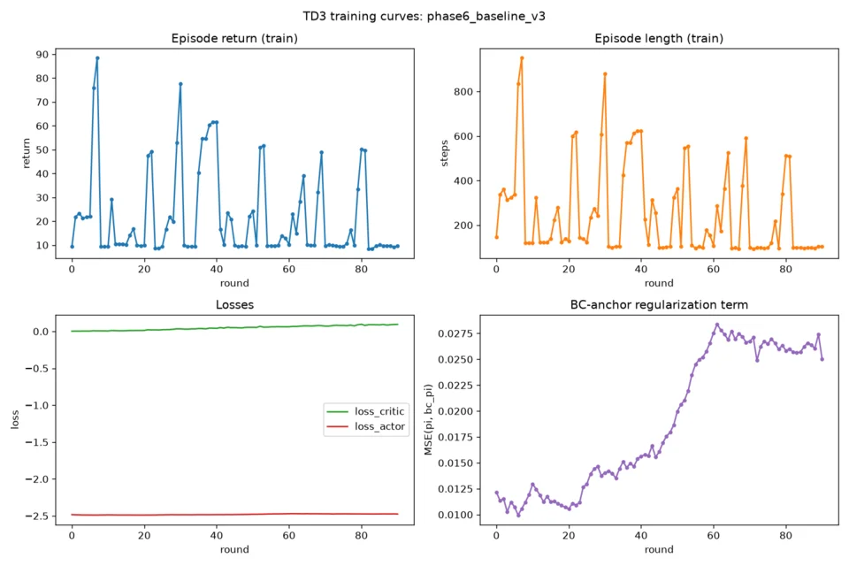

TrackMania TD3
TD3 written from scratch on top of TMRL for TrackMania 2020: LIDAR observations, behaviour-cloning warm start from human driving, and curriculum-learning tooling. Training has plateaued so far.
- Technologies
- Python, PyTorch, TD3, Actor–critic, TMRL, Behaviour cloning, pytest
- Period
- Sep 2026
- Status
- In progress
- Directory
- AI and Machine Learning · Research
- Links
- Source for TrackMania TD3
Overview
A research project that trains a continuous-control driving agent for TrackMania 2020. TD3 (Fujimoto, van Hoof and Meger, 2018) is implemented from scratch on top of TMRL 0.7.1. Only TMRL's environment, networking, replay-memory format and extension points are reused. TMRL's own SAC and REDQ are not used. Observations are LIDAR rays plus speed, and the agent starts from a policy behaviour-cloned from recorded human driving.
Each experiment is logged with a manifest: date, config, what happened and what it does not prove.
Implementation
- TD3 (
td3/agent.py). Twin critics with clipped double-Q targets (TMRL'sMLPQFunctionreused as the critic class); delayed policy updates (policy_delay = 2); target policy smoothing with clipped noise (clip 0.5); Polyak-averaged targets (tau = 0.005); a critic-only warm-up before the actor starts updating. - Actor (
td3/models.py). A 256×256 MLP for gas, brake and steering. - Human demonstrations (
demonstrations/). Recording, inspection and a dataset in TMRL's replay format, used to behaviour-clone the actor before RL. - BC regularisation. A TD3+BC-style term keeps the actor close to the frozen behaviour-cloned actor (
bc_reg_alpha), with an anchor weight that can decay over training. - Curriculum tooling (
curriculum/). Stage definitions (track plus recorded reward trajectory), a per-track reward registry, and promotion gates based on a window of returns. Six custom maps are wired in as stages. - Stuck recovery (
td3/stuck_recovery.py). A −0.1 reward once the car has been stuck (LIDAR minimum ≤ 0.5 and speed ≤ 2) for 5 consecutive steps. - CLI (
train_td3.py). Server, trainer and worker processes, recording, pre-training, diagnostics, evaluation modes and curriculum commands.
An earlier DDPG implementation is kept in archive/ddpg_legacy/ as a possible ablation baseline.
Results / Validation
- Attempt 1. While the actor was frozen, the behaviour-cloned policy drove real episodes (returns 25–77, up to 881 of 1000 steps). Within about five actor updates after warm-up, it collapsed to zero return and 81-step episodes, the reward function's stall timeout.
- Fix. Added BC regularisation to the actor loss.
- Attempts 2–3. The collapse did not return over an extended run of 90 rounds (about 35 minutes). However, the return stayed bimodal: a floor near 8–10, with recurring peaks of 40–90. This is recorded as a plateau, not as learning progress.
- Diagnosis. A 6-episode deterministic evaluation trace showed the policy accelerating to about 45 km/h and then wedging into the same wall every time. LIDAR minimum was 0 for the rest of each episode.
- Mitigation. The stuck-recovery penalty was replayed against the known-bad actor and fires as designed. Whether training with it produces better recovery has not been measured.

results/).Testing: an offline pytest suite (13 test functions in 9 files) covers the agent, models, checkpoints, demonstrations, the curriculum promotion logic, stuck recovery and the replay format. It needs neither TrackMania nor OpenPlanet.
Limitations
- The agent does not yet drive the test track reliably.
- Curriculum learning is implemented and unit-tested, but no curriculum training run has been reported, so there is no evidence of generalisation across tracks.
- Each configuration was run once, for a short time. Loading maps and recording each track's reward has to be done by hand.
Notes on the evaluation: TD3 on TrackMania: what the logs show.
Source and references
- Repository: github.com/thenamelessone888/RL
- Article: TD3 on TrackMania: what the logs show
- Related: Space Shooter DQN — Pygame space shooter with a Dueling Double DQN agent trained on stacked 84×84 grayscale frames.